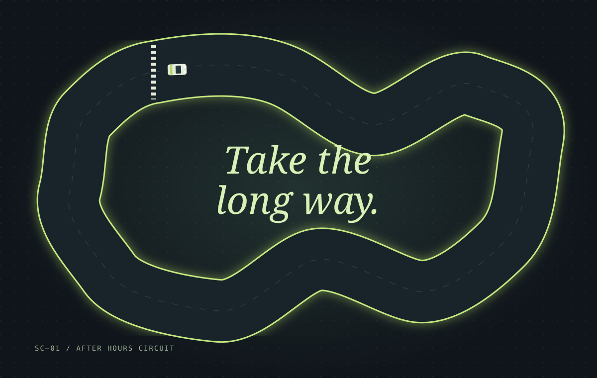
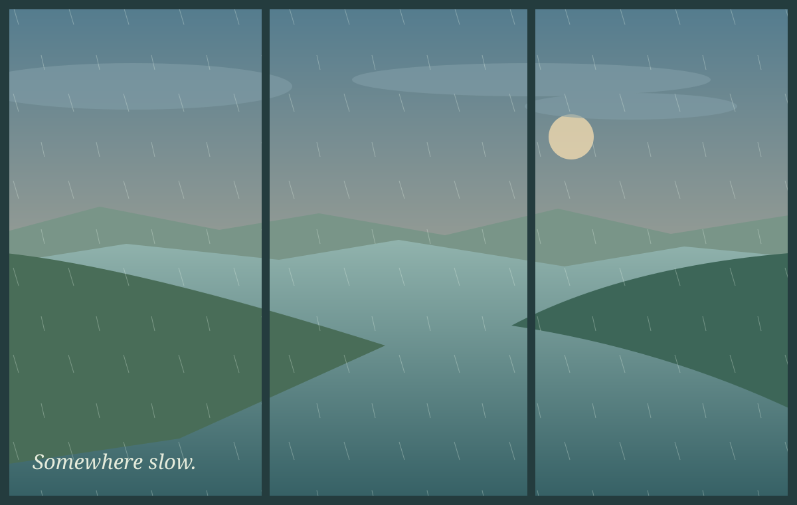
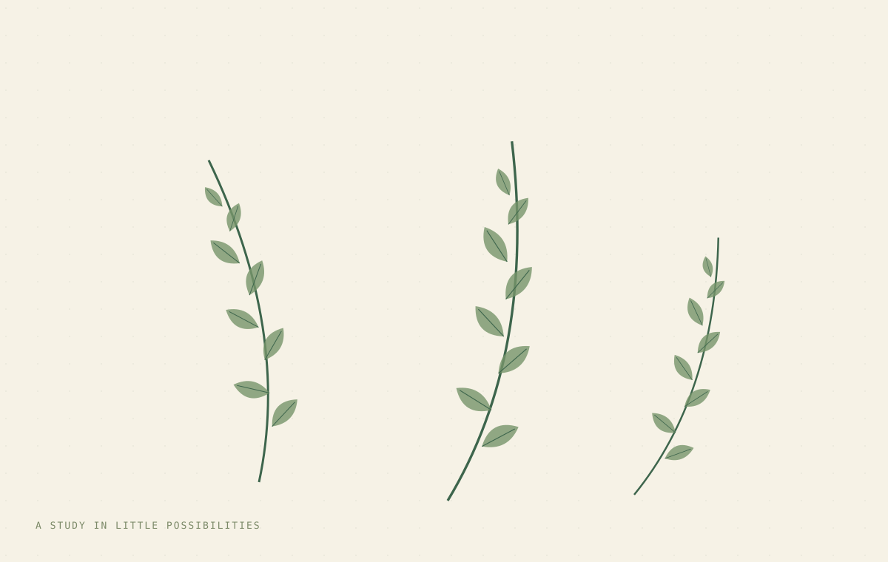

A LITTLE CURIOSITY, GIVEN SOME ROOM
A little room
to play.
Small experiments in motion, interaction,
and the pleasure of
making things.

001 / INTERACTIVE
A LITTLE SIDEWAYS. A LOT OF CONTROL.
Neon Drift
A night circuit, two laps, and your own ghost to chase. Find the line. Then find a better one.
Drive the circuit
002 / ATMOSPHERE
SOMEWHERE SLOW.
Weather Window
Rain, wind, and a different kind of daylight. Make a little weather of your own.
Change the view
003 / GENERATIVE
A STUDY IN LITTLE POSSIBILITIES.
Living Sketchbook
A gesture becomes a garden, or a flowing field of color. Make something worth keeping.
Draw a little